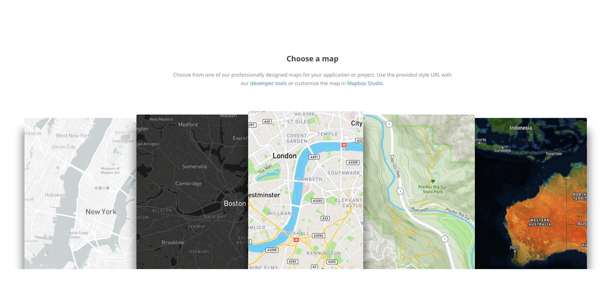

- When you have an unused `icon`.
- When you have a missing `icon`.
- When you have an incorrectly formatted `icon`, i.e. size, color.
- Certain types features must be styled. i.e. disputed boundaries
- If styled, certain **features** required other **features** also be styled. i.e. if national_parks are styled, parks also must be styled.
- Certain features must be styled in a particular order. i.e. `bridge` layers must sit above `road` layers which must sit above `tunnel` layers.
- Certain features have specific stylistic requirements, i.e. `highway-shields` must be set to `placement=line` at `z12+`.